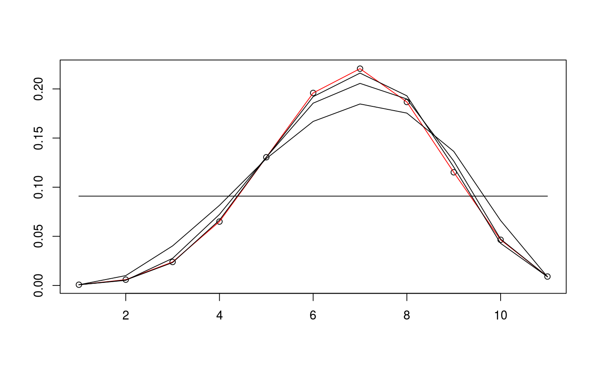
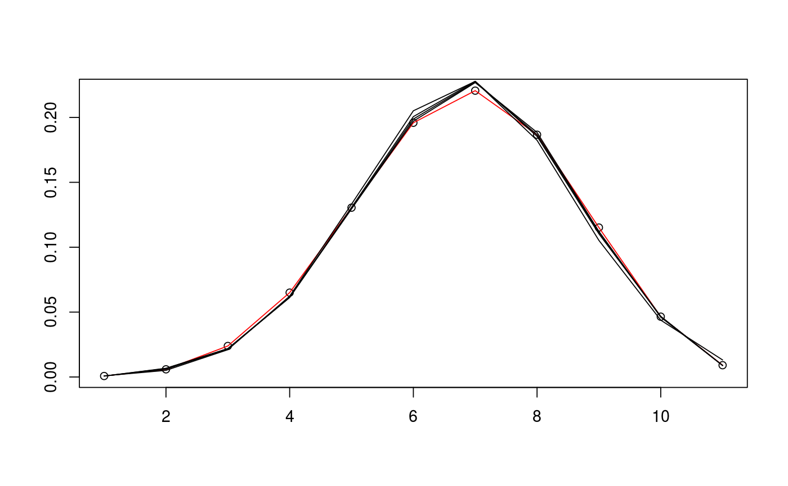

estim_em produces EM-type iterates from a two-column
matrix whose rows form iid samples from a bivariate chi-bar-squared
distribution.
estim_em(d, m_samp, N = 20, v_init = NULL, init_mode = 0, lambda = 0, no_of_lcc_projections = 1, lcc_amount = 0, extrapolate = 0, selfdual = FALSE, data = NULL)
| d | the dimension of the bivariate chi-bar squared distribution. |
|---|---|
| m_samp | two-column matrix whose rows from iid samples from a bivariate chi-bar-squared distribution. |
| N | the number of iterates that shall be produced. |
| v_init | the starting point for the EM iterates; if none are provided,
the starting point is found in a way specified by the input |
| init_mode | specifies the way through which the initial estimate is found:
The starting point will be returned as the first row in the output matrix. |
| lambda | nonnegative parameters which, if positive, enforce the
log-concavity inequalities. Enforcing these may have negative
effects on the performance. |
| no_of_lcc_projections | number of projections on the log-concavity cone |
| lcc_amount | constant for strict log-concavity |
| extrapolate | specifies the way the edge cases are handled:
|
| selfdual | logical; if |
| data | output of |
The output of estim_em is a list of an (N+1)-by-(d+1)
matrix whose rows constitute EM-type iterates, which may or may not
converge to the maximum likelihood estimate of the mixing weights of
the bivariate chi-bar-squared distribution, and the corresponding values
of the log-likelihood function.
The sequence of iterates may or may not converge
to the maximum likelihood estimate of the mixing weights of the distribution.
Log-concavity of the intrinsic volumes is enforced by projecting the logarithms
onto the cone of log-concave sequences; this can be turned off by setting
no_of_lcc_projections=0.
rbichibarsq, circ_rbichibarsq,
rbichibarsq_polyh, prepare_em,
init_ivols, loglike_ivols
Package: conivol
# define cone and find sample data D <- c(5,5) alpha <- c(pi/3,pi/4) d <- sum(D) N <- 10^5 v_exact <- circ_ivols( D, alpha, product=TRUE ) m_samp <- rbichibarsq(N,v_exact) # prepare data and run EM algorithm twice with different inits data <- prepare_em( d, m_samp ) est1 <- estim_em( d, m_samp, data=data ) est2 <- estim_em( d, m_samp, init_mode=1, data=data ) # plot the iterates of the first EM run plot(1+0:d, v_exact)lines(1+0:d, v_exact, col="red")lines(1+0:d, est1$iterates[1,])lines(1+0:d, est1$iterates[5,])lines(1+0:d, est1$iterates[10,])lines(1+0:d, est1$iterates[21,])# plot the iterates of the second EM run plot(1+0:d, v_exact)lines(1+0:d, v_exact, col="red")lines(1+0:d, est2$iterates[1,])lines(1+0:d, est2$iterates[5,])lines(1+0:d, est2$iterates[10,])lines(1+0:d, est2$iterates[21,])